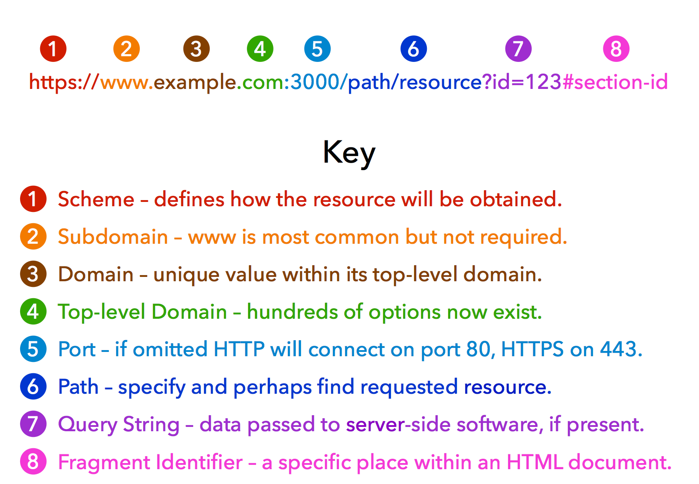
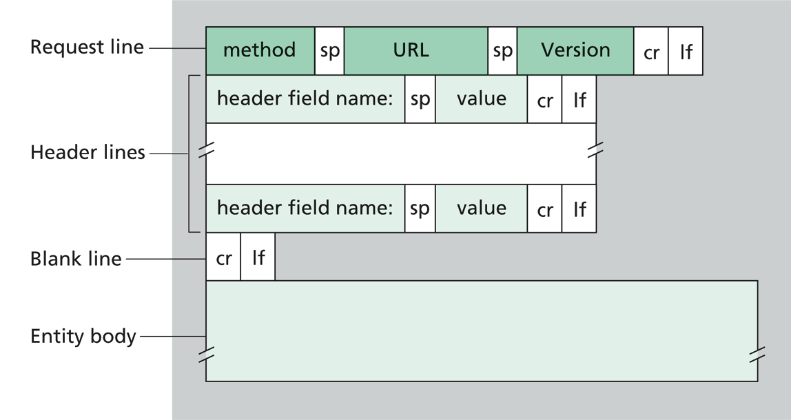
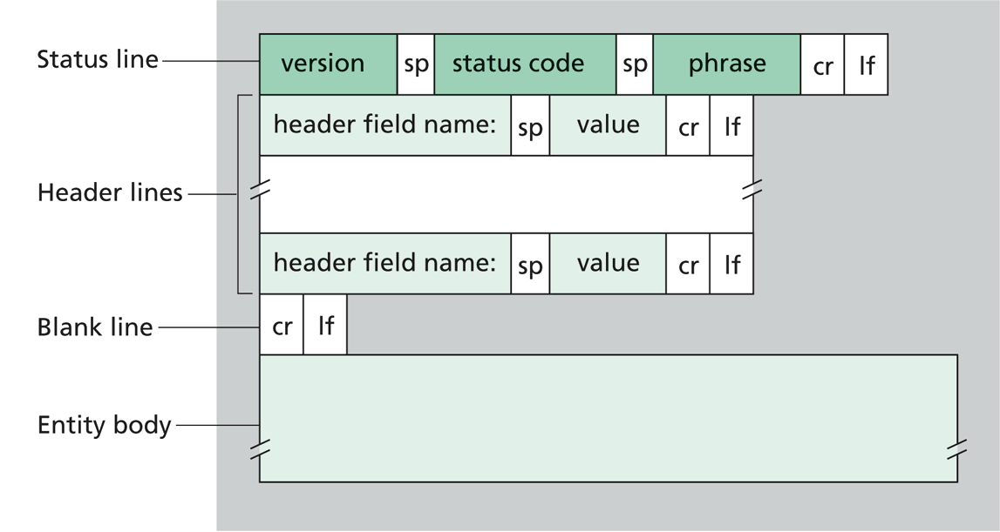
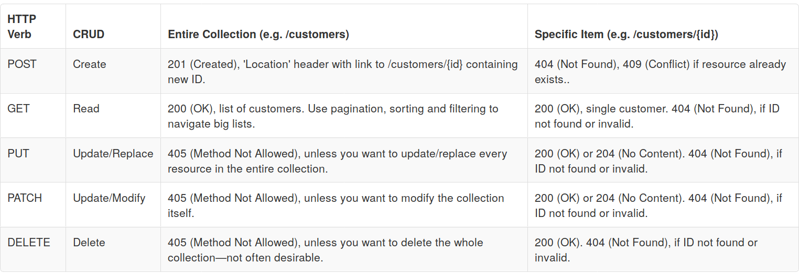
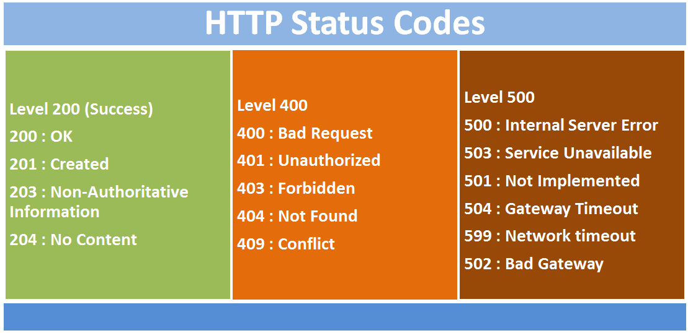
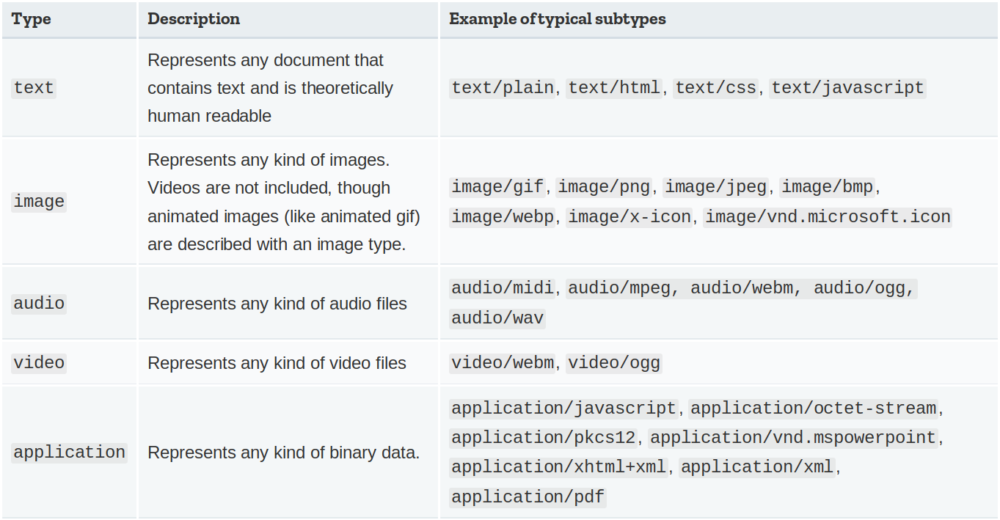

Web Services and RESTful APIs
Software Engineering
(for Intelligent Distributed Systems)
A.Y. 2025/2026
Giovanni Ciatto
Compiled on: 2026-05-07 — printable version
What is the Web?
The Web is, at the same time:
- a distributed hypermedia information system
- a collection of resources accessible via the Internet
- an infrastructure for distributed systems based on HTTP
In practice, the Web revolves around:
- resources identified by URLs
- interactions mediated by HTTP
- documents and applications built with HTML, CSS, and JavaScript
- hyperlinks connecting information and behaviour
URLs identify resources

- a URL tells the client where a resource is and how to reach it
- different parts of the URL may identify host, port, path, query parameters, or fragment
- in ReSTful systems, URLs should identify resources rather than actions
HTTP is the Web’s application protocol
HTTP standardizes how clients and servers exchange messages:
- requests from client to server
- responses from server to client
- methods describing the intended operation
- status codes describing the outcome
- headers and bodies carrying metadata and content
HTTP request messages

- request line: method, target URL, protocol version
- headers: metadata such as content type, authorization, cache directives
- body: optional payload, common in POST, PUT, and PATCH
HTTP response messages

- status line: protocol version, status code, reason phrase
- headers: metadata such as content type, caching, or location
- body: the representation of the requested resource, or error details
Methods and status codes


- methods such as GET, POST, PUT, PATCH, DELETE define the operation semantics
- status codes such as 200, 201, 204, 404, 409, 500 summarize the result
- together, methods and status codes form the vocabulary of Web APIs
Content on the Web
The classic Web stack separates concerns:
- HTML for structure and content
- CSS for presentation and styling
- JavaScript for dynamic behaviour
HTTP bodies can carry many media types, not just HTML pages.

Hypertext and hypermedia
- hypertext means documents contain links to other documents
- hypermedia generalizes the same idea to images, audio, video, forms, and executable behaviour
- the Web became successful because resources are loosely coupled and navigable through links
Links are what transform isolated documents into an information space.
History of the Web in a nutshell
- Web 1.0: mostly static pages, read-only browsing
- Web 2.0: server-side dynamic pages, forms, template engines, user-generated content
- Web 3.0: rich clients using AJAX to talk to Web services asynchronously
- Web 4.0: single-page applications with highly interactive frontends

What are Web Services?
A Web service is, roughly speaking:
- a distributed software component exposed through an HTTP interface
- accessible over the network by heterogeneous clients
- designed to encapsulate data and functionality behind a stable API
Its API typically specifies:
- endpoints and URL patterns
- admissible HTTP methods
- input parameters, headers, and body formats
- output formats and status codes

Why Web Services dominate distributed systems
Web services are the backbone of modern distributed systems because:
- Web mechanisms are simple yet flexible
- HTTP is pervasive and highly optimized
- the Web stack is language- and platform-independent
- HTTP is widely supported and usually firewall-friendly
- ReST encourages interoperability through a uniform interface
They are also useful to wrap legacy software so as to:
- expose existing capabilities on the Web
- let heterogeneous components interoperate

The ReST architectural style
ReST is an architectural style for distributed hypermedia systems.
Its key constraints are:
- client-server
- representational state transfer
- uniform interface
- stateless interactions
- cacheable responses
- layered system
- code on demand
The point is not to use HTTP superficially, but to structure interactions around resources and representations.
ReST constraints in practice
- client-server: clients consume resources, servers host them
- representation-oriented: clients exchange representations, not direct access to server internals
- uniform interface: resources are identified by URLs and manipulated via standard HTTP methods
- stateless: each request contains all the information needed to process it
- cacheable: responses may be reused when allowed
- layered: proxies, gateways, and intermediaries can be inserted transparently
- code on demand: optional transfer of executable code, for example JavaScript

ReSTful APIs in practice
Design the system in terms of:
- collections of resources
- individual resources
- admissible operations on each resource
Typical reasoning pattern:
- collection endpoint: /customers
- item endpoint: /customers/{id}
- operation semantics mapped onto HTTP methods
From API design to implementation
- devise the API, for example with OpenAPI Specification
- identify endpoints and parametric URLs
- identify admissible HTTP operations
- identify input parameters and body formats
- optionally define relevant headers
- define response formats and status codes
Then implement:
- the server side with frameworks such as Flask, FastAPI, or Spring Boot
- the frontend side with frameworks such as React, Angular, or Vue

Check your understanding (pt. 1)
- What does it mean to say that the Web is a distributed hypermedia information system?
- What is the role of a URL in Web communication?
- Which parts make up an HTTP request? And an HTTP response?
- What is the difference between an HTTP method and an HTTP status code?
- What are HTML, CSS, and JavaScript responsible for in a Web application?
- What is the difference between hypertext and hypermedia?
- How did the Web evolve from static pages to single-page applications?
- What is a Web service, and how is its API usually described?
- Why are Web services so effective for distributed systems integration?
- What are the main constraints of the ReST architectural style?
- What does it mean for a ReST interaction to be stateless?
- How would you model a simple domain in terms of collections, resources, and operations?
Lecture is Over
Compiled on: 2026-05-07 — printable version